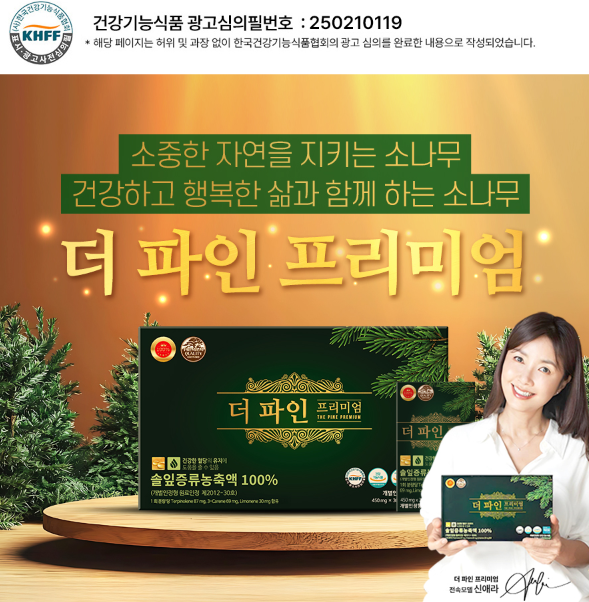
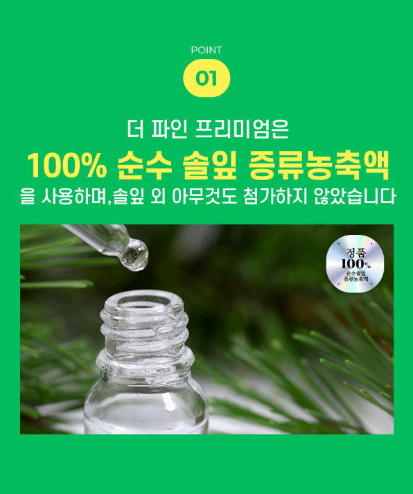
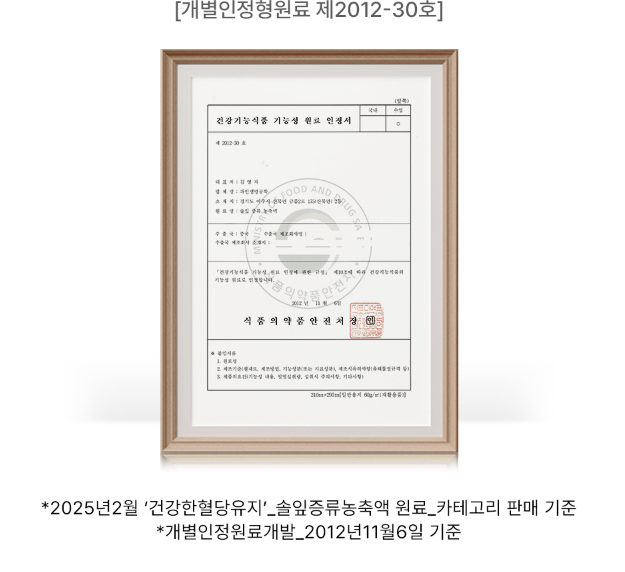
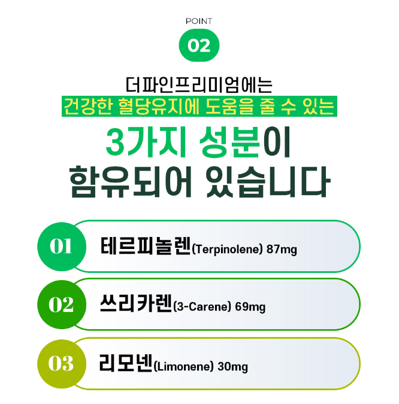
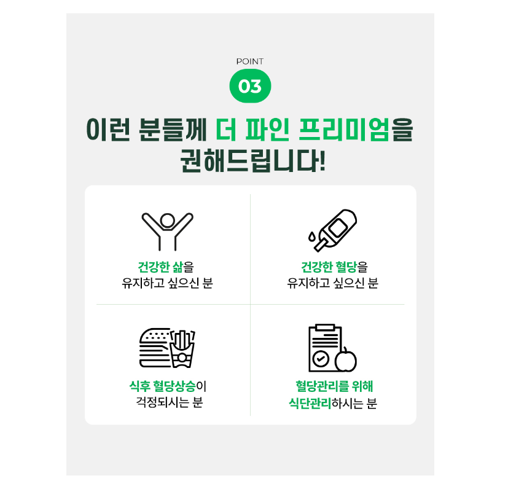
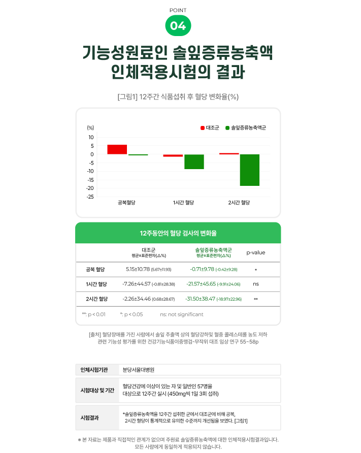

1. 더파인프리미엄이란?
건강 관련 제품을 선택할 때는 단순히 제품명이나 광고 문구만 보고 판단하기보다 어떤 특징을 가지고 있는지, 어떤 방식으로 소개되고 있는지 충분히 확인하는 과정이 중요합니다.
더파인프리미엄에 관심이 있다면 제품 관련 자료를 살펴보면서 본인의 생활 습관과 현재 관심 분야에 잘 맞는지 비교해보는 것이 좋습니다. 제품에 대한 정보는 하나만 보는 것보다 여러 내용을 함께 살펴보는 것이 도움이 됩니다.

2. 제품 특징을 먼저 확인해보세요
같은 건강 관련 제품이라고 하더라도 제품마다 소개되는 특징과 구성은 다를 수 있습니다. 따라서 제품을 알아볼 때는 어떤 부분을 중심으로 만들어졌는지, 어떤 소비자를 대상으로 소개되고 있는지 살펴보는 것이 좋습니다.
더파인프리미엄 관련 정보를 확인할 때도 제품의 기본적인 구성과 안내 내용을 먼저 살펴본 뒤 자신이 찾고 있던 제품인지 비교해보세요.

3. 제품 선택 전 확인하면 좋은 내용
건강 관련 제품은 개인마다 선택 기준이 다를 수 있기 때문에 제품을 이용하기 전에 상세한 설명과 안내 사항을 충분히 확인하는 것이 필요합니다.
특히 현재 본인이 어떤 부분에 관심이 있는지 생각해보고 제품의 특징과 자신의 목적이 잘 맞는지 비교하면 보다 합리적으로 제품을 살펴볼 수 있습니다.

더파인프리미엄 자세히 알아보기
제품에 대한 자세한 내용과 상담 정보를 확인해보세요.
자세히 알아보기4. 관련 정보를 비교해서 확인하세요
하나의 소개 자료만 보고 바로 판단하기보다 제품에 대한 여러 정보를 함께 확인하면 제품을 이해하는 데 도움이 됩니다.
더파인프리미엄과 관련된 자료를 살펴볼 때는 제품의 특징뿐만 아니라 이용 방법과 안내사항까지 함께 확인하는 것이 좋습니다. 궁금한 점이 있다면 추가적인 상담 내용을 참고하는 것도 하나의 방법입니다.
5. 본인에게 필요한 제품인지 살펴보세요
건강과 관련된 제품은 모든 사람에게 동일한 기준으로 적용되는 것이 아니기 때문에 본인의 상황과 필요를 기준으로 제품 정보를 확인하는 것이 중요합니다.
제품에 대한 기대만 가지고 선택하기보다는 현재 생활 습관과 관심 분야를 함께 고려하면서 필요한 정보를 충분히 확인한 뒤 결정하는 것이 좋습니다.

6. 상세 안내와 주의사항도 확인하세요
제품을 이용하기 전에는 소개 내용뿐만 아니라 제품별 상세 안내와 이용 시 참고사항을 함께 확인하는 것이 좋습니다.
개인의 상황에 따라 필요한 정보가 달라질 수 있으므로 본인이 궁금한 부분을 미리 정리해두고 상담이나 공식 안내를 통해 확인하면 보다 정확하게 제품 정보를 이해할 수 있습니다.

7. 충분히 확인한 뒤 결정하세요
건강 관련 제품을 선택할 때는 빠르게 결정하기보다 제품과 관련된 여러 정보를 차분하게 확인하는 과정이 필요합니다.
더파인프리미엄에 대해 더 궁금한 부분이 있다면 제품의 상세 소개 자료와 상담 정보를 함께 확인해보고 본인에게 필요한 제품인지 신중하게 살펴보세요.

더파인프리미엄 정보 확인하기
제품 관련 궁금한 내용과 자세한 정보를 확인해보세요.
무료 상담 및 정보 확인